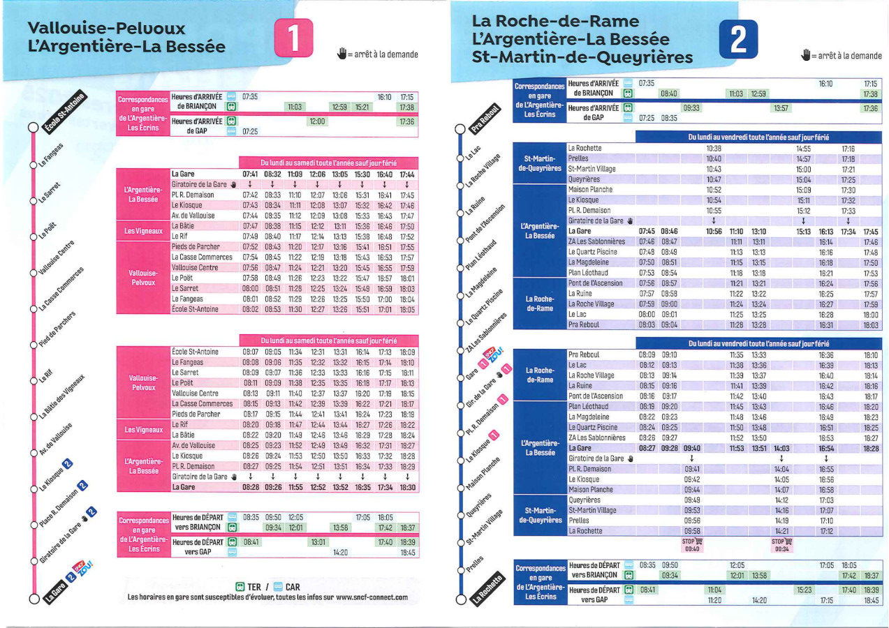
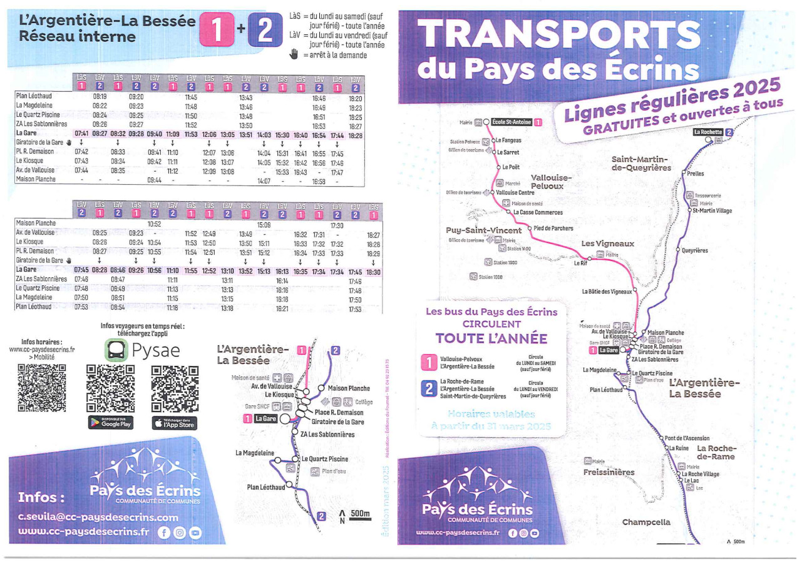
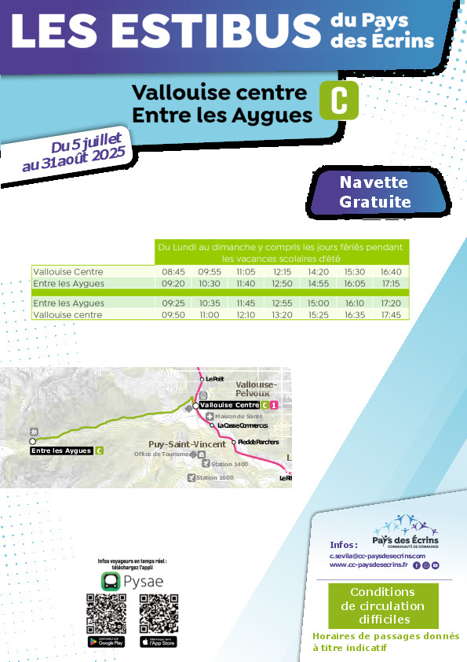

| Id | From | To | N Points | Distance (km) | Elevation + (m) | Elevation - (m) | Distance effort (km) | Duration |
|---|---|---|---|---|---|---|---|---|
| 1 | Entre-les-Aygues - Pré de la Chaumette | 2192 | 16 | 1150 | -961 | 31 | 6h52 | |
| 2 | Pré de la Chaumette - Refuge Chabournéou | 2219 | 15 | 1243 | -1028 | 31 | 6h55 | |
| 3 | Refuge Chabournéou - Refuge de l'Olan | 2593 | 19 | 1293 | -998 | 36 | 7h53 | |
| 4 | Refuge de l'Olan - Refuge des Souffles | 1290 | 9 | 603 | -956 | 18 | 4h3 | |
| 5 | Des Souffles - Désert en Valjouffrey | 1403 | 11 | 625 | -1333 | 22 | 4h49 | |
| 6 | Désert en Valjouffrey - col de Côte Belle - Valsenestre | 909 | 11 | 1009 | -988 | 25 | 5h31 | |
| 7 | Valsenetre - lac de la Muzelle | 594 | 9 | 1282 | -479 | 23 | 5h12 | |
| 8 | Lac Muzelle - Bourg d'Oisans | 1467 | 19 | 490 | -1872 | 31 | 6h46 | |
| TOTAL | 121 | 8654 | -8714 | 236 |


